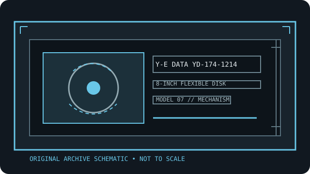

[ INDIVIDUAL COMPONENT // FLOPPY DRIVES ]
Y-E Data YD-174-1214 8-inch floppy drive
This record identifies a real, model-specific 8-inch diskette mechanism. Format capacity and host fit depend on the documented revision, interface options, controller, recording mode, and media; values are not inferred from form factor alone.

IDENTIFICATION NOTE: Y-E Data YD-174-1214 is a bare mechanism/drive model, not a generic PC floppy peripheral. Match the full label, PCB revision, connector and voltage configuration to the cited manual before connecting or servicing it.
Model specifications
| Catalog subcategory | 8-inch floppy mechanisms |
|---|---|
| Exact model / family | Y-E Data YD-174-1214 8-inch floppy drive |
| Disk format and capacity | 8-inch, two-sided; 77 cylinders / 154 tracks. OEM summary: 0.8 MB unformatted and 568 KB IBM-format single density; 1.6 MB unformatted and 1.2 MB IBM-format double density with write precompensation. 48 TPI; 360 RPM. |
| Host interface | The specification describes compatibility with the Shugart SA850R interface, with the stated exception that YD-174 requires a LOW CURRENT input. Signal, power, connector, and timing pinouts are in the model specification. |
| Data rate | 250 kbit/s single-density FM; 500 kbit/s double-density MFM with write precompensation, per the model specification. Controller encoding and precompensation must match the selected density. |
| Drive select / jumpers | Drive Select 1–4 and customer-installable select/termination options are documented. Up to four units may be daisy-chained per the specification; set unique selects and verify the LOW CURRENT input requirement. |
| Dimensions / mounting | Use the model specification’s outline and physical-interface drawings for dimensions, mounting, and connector clearance. This model is not dimensionally interchangeable based on the nominal 8-inch format. |
| Power requirements | OEM DC requirements: +24 VDC ±10%, 1.0 A maximum; +5 VDC ±5%, 1.3 A maximum. The manual also distinguishes 100/115 VAC and 200/230 VAC configurations; check the exact drive nameplate and power connector before energizing. |
| Controller / host compatibility | A Shugart SA850R-compatible controller is the documented starting point, but LOW CURRENT input is specifically required. Verify signal level, recording mode, precompensation, disk geometry, select wiring, and host software. |
Model-specific compatibility checks
- Record the complete model suffix, serial/date code, board revision, connector keying, and all drive-select or option links before installation.
- Confirm controller signaling, line termination, host drive-select assignment, recording density, sector geometry, and the manual’s power connector pinout as a single compatible configuration.
- Do not connect by connector shape alone. An 8-inch drive may require non-PC signal conventions, additional DC rails, or a mains-rated supply; follow the model documentation.
Preservation and safety notes
Disconnect mains and DC power before changing links; mains-powered variants can expose lethal voltage. Keep the correct voltage configuration, do not power from a PC 34-pin cable, inspect media before insertion, and preserve originals with read-only capture.
For archival work, preserve original media in its native format, make a verified read-only acquisition first, checksum retained copies, and log the drive, controller, software, media condition, and any service or conversion performed.
Manufacturer manuals & archive sources
- Y-E Data YD 174-1214 Product Specification (Internet Archive)Model-specific 8-inch specification, capacity, interface, timing, power, and physical interface.
- Y-E Data YD174-1214 scanned PDFDirect archival copy of the YD-174-1214 OEM specification.
Consult the exact model/revision manual before applying electrical or service values. Family references are useful only where their coverage matches the marked unit.